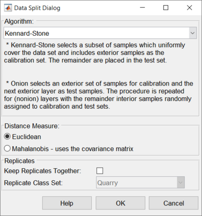
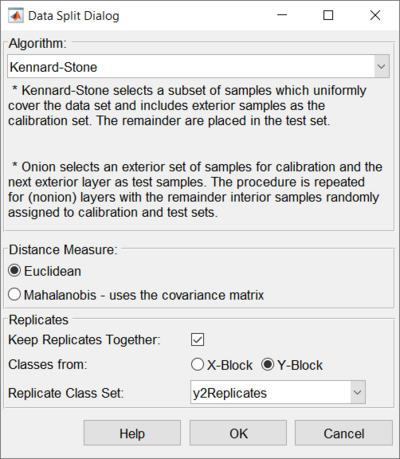

Automatic sample selection
The Calibration/Validation Sample selection interface allows the user to choose which samples to keep in the calibration set (Cal) and which to move to the validation set (Val).
Selection can be done manually, by setting the "Sample Type" Class set (Under the Row Labels tab) to either Calibration or Validation for each sample, or automatically by selecting the Automatic split button (gear) in the toolbar.
The sample selection interface is opened by choosing "Split into Calibration / Validation" from any of the data blocks in the Analysis status window. The resulting interface is a customized DataSet editor which shows one row for each sample in the current calibration and validation blocks and allows the user to modify the status of each sample.
Once set selection is done, the "Accept Experiment Setup" toolbar button can be used to automatically sort the data into the calibration and validation blocks. All data marked as "Calibration" will be moved to the X/Y blocks in the calibration section of the Analysis window and all data marked as "Validation" will be moved to the X/Y blocks in the validation section of the Analysis window. Clicking the "Discard Experiment Setup" button will discard all Cal / Val changes.
Manual Sample Selection
Each sample can be moved to either the Calibration or Validation set by simply changing the "Sample Type" class. If there are labels for the samples, these will be shown in the Label field of the interface.
To move more than one sample at a time, click the button at the left of each row to move to select the row. Once all the desired rows are selected, use the Class pull-down menu on one of the selected rows to choose Calibration or Validation, as desired. All selected samples will be switched to the indicated set.
Automatic Sample Selection
Automatic sample selection walks the user through the selection asking a series of questions outlined below.
Disposition of Previous Selection Changes
First, if there are any samples which have been manually or automatically moved from Cal to Val, or vice versa, the user is asked if they want to Reset all samples back to their original set before automatic selection is done. Choosing "Reset" will restore all the samples to the set they were in when the sample selection interface was opened. Choosing "Select from Current Split" will keep the samples in their current split and allow further selection automatically. "Cancel" stops all selection.
Direction for Sample Selection
Next, if there are any samples marked as Validation, the user is asked which "direction" they want to select, either removing samples FROM the calibration set (to the validation set), or adding samples TO the calibration set (out of the validation set). The first option is used when there are more samples in the calibration than are desired or when the user wishes to create a test set for their model. The second option is used when new data has been measured and the user wishes to add some subset of these samples to a previous set of calibration samples (to improve model performance on the new types of samples.)
If all the samples are in the calibration set already, Remove From Calibration is assumed.
Main Interface
|  |  |
| Only X block loaded | X block and Y block loaded |
The left image shows the Automatic Sample Selection interface with only an X block loaded. The right image shows the Automatic Sample Selection interface with an X block and Y block loaded. See Handling Replicates section for more details.
Selection Method
Next, the selection method must be chosen:
- Kennard-Stone - based on kennardstone this method selects samples that best span the same range as the original data, but with an even distribution of samples across that range. This is similar to the previously-offered method reducennsamples.
- Onion - based on distslct and Splitcaltest this method first selects a ring of the most unique samples (based on distance from the mean - like the outer-most layer of an onion.) These are used in the calibration set. Next, a ring of less unique samples, just inside the first set (the next onion layer), is put into the validation set. This is repeated two more times so there are three outer rings of most unique and less unique samples. Finally, all remaining samples are split randomly into calibration and validation.
- Duplex - based on duplex, selected samples should provide uniform coverage of the dataset and include samples on the boundary of the data set. Duplex starts by selecting the two samples furthest from each other and assigns these to the calibration set. Then finds the next two samples furthest from each other assigns these to the test set. Then iterates over the rest of the samples to find the sample furthest from the samples in the calibration set and assigns this to the calibration set and then finds the sample furthest from the test set and assigns this to the test set. This is done until the desired number of samples in the calibration set is reached.
- Random - based on randomsplit, this method will randomly split the data into calibration and test sets.
- SPXY - based on spxy, this method requires X block data and Y block data to split data into calibration and test sets.
Distance Measure
Defines the type of distance measure to use for the onion method. Euclidean does simple, non-scaled distance. Mahalanobis scales each direction by the covariance matrix (correcting for unusually small or large directions).
Handling Replicates
When choosing a selection method, the user can also define whether to use special replicate handling. In most cases, if you have replicate measurements, you do not want to split them between the calibration and validation sets. You want to keep them together in either the calibration or validation sets.
To use this feature, you must first create a class set in your data in which each set of replicate samples are assigned to the same class (with a different class for each group of samples that it is safe to split - see example below). Next, after a sample selection method is chosen, mark the "Keep Replicates Together" check-box on the Data Split Dialog. Then, choose the class set from the "Replicate Class Set" list which defines the replicate classes. The automatic splitting algorithm will keep those replicate samples together.
As shown in the images above, the Keep Replicates portion of the interface will appear different based on if there is only an X block loaded or if there is an X block and Y block loaded. When a Y block is loaded then you can choose which block to use for selecting a class set to keep replicates.
Below is an example of a set of samples and the classes that would work to keep replicates together:
| Label | Class |
|---|---|
| Sample 1 Replicate 1 | A |
| Sample 1 Replicate 2 | A |
| Sample 2 Replicate 1 | B |
| Sample 2 Replicate 2 | B |
| Sample 2 Replicate 3 | B |
| Sample 3 Replicate 1 | C |
| Sample 3 Replicate 2 | C |
Choosing Percentage to Keep
Finally, the user must select the percentage of samples to "select". In the case of Removing From Calibration, this is the percentage of Calibration samples to keep in the calibration set. In the case of Adding To Calibration, this is the percentage of Validation samples to add to the calibration set. The value must be between 1 and 100
Note: If using the Onion method, the number of samples that are split into calibration and validation may slightly differ from the expected number due to the "nonion" and loop fraction parameters. See splitcaltest for more information on these parameters.
Finishing the Selection
Once all settings have been defined, the selection will take place and the samples will be marked in their new sets. It may be useful to create a plot (click on the Plot toolbar button, or the Plot tab) to view which samples are in which sets. Accepting the changes will move all samples to the new sets and make sure Analysis is in the appropriate configuration for analysis of the data.